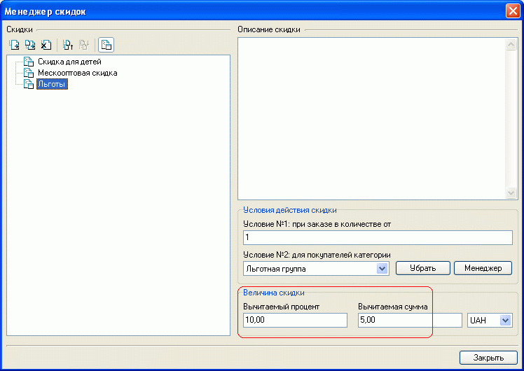
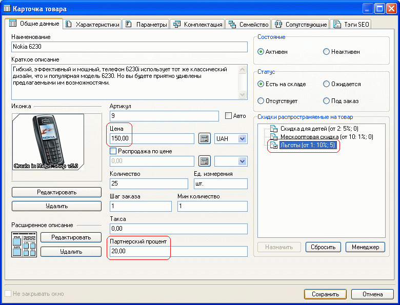
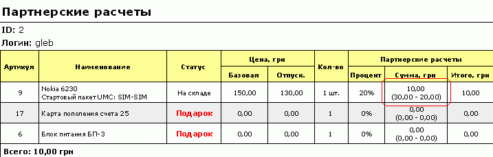
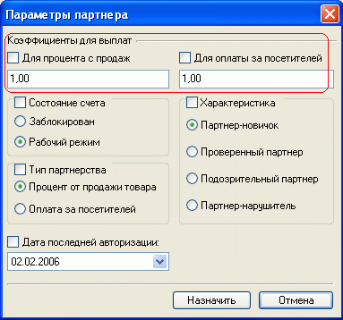
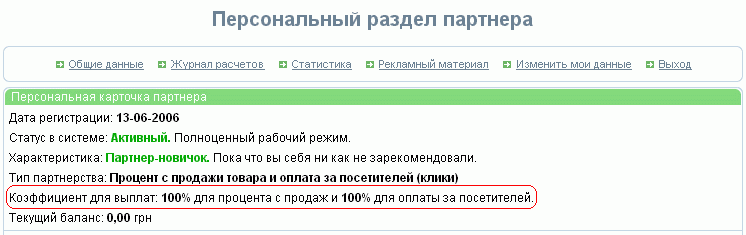

Расчет с партнерами может производиться как процент от продаж и/или за посетителей. Значение партнерского процента задается на закладке "Общие данные" карточки товара .
При оплате "процента от продажи товара" сумма, подлежащая выплате партнеру, участвующему в партнерской программе, определяется как разница между величиной, определяемой в соответствии с процентом продаж этого партнера, и назначенной товару скидкой. В свою очередь назначенная товару скидка может быть как заданной через менеджер скидок, так и полученной в результате распродажи товара по цене, указанной в карточке этого товара). Подлежащая выплате партнеру сумма не может быть отрицательной.
Например, в менеджере скидок была задана скидка "Льготы" с величиной скидки: 10% от стоимости товара и вычитаемая сумма 5.00 грн:

И покупатель, который подпадает под эту скидку, выбрал товар стоимостью 150 грн., для которого в общих данных карточки товара задано значение партнерского процента с продаж 20% и назначена скидка "льготы":

При этом "привел" данного покупателя, партнер (см. "Партнерская программа"), для которого задан тип партнерства - "Процент от продажи товара":
Тогда для указанного случая конечная сумма, подлежащая выплате партнеру, будет определена как:
Величина, определяемая партнерским процентом: |
Назначенная товару скидка: |
20% от стоимости товара 150 грн |
10% от стоимости товара 150 грн. + 5 грн |
30 грн |
20 грн |
ВСЕГО: 30 - 20 = 10 грн |
|
Аналогично, если товару, стоимостью 150 грн назначена распродажа по цене 130 грн, сумма, подлежащая выплате партнеру будет:
Величина, определяемая партнерским процентом: |
Назначенная товару скидка: |
20% от стоимости товара 150 грн |
стоимости товара 150 грн. - стоимость распродажи
130 грн |
30 грн |
20 грн |
ВСЕГО: 30 - 20 = 10 грн |
|
И при просмотре заказа для него будет выдан расчет (приведен фрагмент документа "Заказ"):

Следует иметь в виду, что в случае продажи товаров, имеющих статус "ожидается" (необнуления количества для такого товара), партнерский процент на такой товар не начисляется.
Оплата партнеру за посетителей ("клики") начисляется только при условии, что хотя бы одним из приведенных им посетителей сделан и оплачен заказ. Это позволяет исключить недобросовестность отдельных партнеров, искусственно организовывающих большое количество "кликов" нецелевой аудитории.
Момент расчета числа "кликов" на число заказов задается за закладке "Настройки" партнерской программы в виде указания параметра "Начислять оплату за клики в день месяца..." и зависит от скорости обработки заказов (чтобы наверняка знать, что не осталось принятых, но еще не выполненых заказов за предыдущий месяц).
При необходимости подлежащую выплате определенному партнеру сумму можно корректировать, используя коэффициент для выплат. Для каждого из способов оплаты- "Процент с продаж" или "За посетителей" может быть задано свое значение коэффициента.

Коэффициенты для выплат также отображаются в процентном виде в персональном разделе партнера:

Сумма, полученная в результате применения указанных коэффициентов, будет видна на этапе зачисления в журнале расчетов.